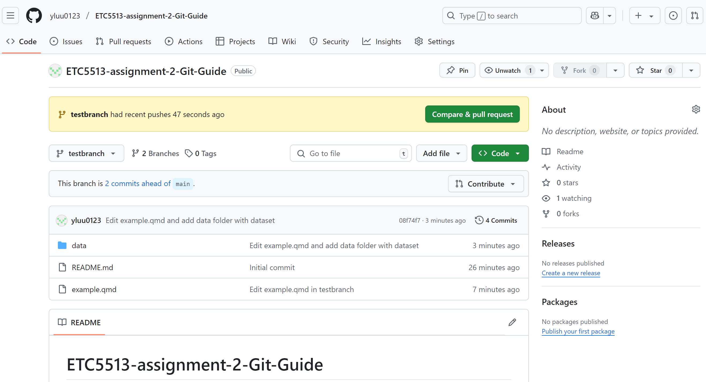

Git Guide
GOAL
To demonstrate key Git workflows for collaboration and version control, including branching, committing, resolving conflicts, tagging, and undoing commits — all documented in a reproducible Quarto project.
1️⃣ Create and Clone a Repo
On GitHub
Create a new repository: ETC5513-assignment2-git-guide
Check “Add a README file”
In Rstudio
Go to File → New Project → Version Control → Git
Paste your repository URL (SSH or HTTPS)
Choose a location and click Create Project
✅You are now working inside a Git-tracked RStudio project.
2️⃣ Add, Commit and Push a File
Create a new
qmdfile: Go to File → New File → Quarto DocumentSave it as
example.qmdin the project folder
Add the following content to the qmd file:
### Hello
I have a dog, we are best friendsThen, save it and click the Render button.
See Figure Figure 1 for the rendered HTML output.
- Open your terminal: Add, commit and push the folder to GitHub:
git add example.qmd
git commit -m "Add example Quarto file"
git push origin main✅ After this, go to GitHub and check — you should now see your project files online.
See Figure Figure 2 for confirmation that the project files were successfully uploaded to GitHub.
3️⃣ Create and Work on a New Branch
Now that the project has been pushed to GitHub, let’s start a new feature by creating a separate branch. This is useful when you want to experiment or work on something without affecting the main branch.
🔀 1. Create a new branch and switch to it
In the Terminal tab of RStudio, make sure you’re inside your project directory.
Check where you are using:
pwdCreate and switch to a new branch called testbranch:
git branch testbranch
git switch testbranch✅ You are now working on a new branch testbranch. This lets you make changes without affecting the main branch.
✍️ 2. Make a Change to example.qmd
In RStudio, open example.qmd and add this line:
This is a test line added from testbranch.Then save the file.
💾 3. Stage and Commit the Change
Back in the Terminal:
Check your file status:
git statusThen stage and commit the file:
git add example.qmd
git commit -m "Edit example.qmd in testbranch"✅ Your change is now saved locally on testbranch.
📂 4. Add a Folder and Data File
Create the
data/folderManually drag and drop your dataset file into the
data/folder.
Now your folder structure should look like:
📠data/
└── life-expectancy-of-women-vs-life-expectancy-of-men.csv- Stage and commit the changes
Now return to the Terminal and run the following commands:
git add data/
git commit -m "Add data folder with life expectancy dataset"✅ Your new commit has been created, containing the data/ folder and your dataset.
4️⃣ Amend the Previous Commit to Include the data/ Folder
Sometimes we realize after a commit that we forgot to include an important folder — like data/. Instead of making a new commit, we can modify the previous one using the --amend option.
✍️ 1. Stage the missing folder
First, stage the data/ folder that was left out of the last commit:
git add data/✅ This tells Git we now want to include the folder in the next commit.
🛠️️ 2. Amend the previous commit
git commit --amend✅ This opens a message editor. Edit the commit message if needed, then save and exit.
🚀 3. Push the Amended Commit to GitHub
Now that you have amended your last commit, let’s push it to the remote repository on GitHub:
git push -u origin testbranch✅ This pushes the updated commit to GitHub under the testbranch branch.
See Figure Figure 3 for the pushed testbranch on GitHub.

5️⃣Switch Back to Main and Create a Conflict
Now that we’ve made changes in testbranch, we’ll switch back to the main branch and edit the same file (example.qmd) in a different way. This will create a merge conflict later when we try to combine both branches.
🔠1. Switch back to main
git switch main✍️ 2. Make a different change to example.qmd
Open example.qmd and change the same line that you previously edited in testbranch, but this time write something different.
This is a conflicting line added on main.✅ Save the file.
💾 3. Stage and commit the change
git add example.qmd
git commit -m "Edit example.qmd on main to create conflict"🚀 4. Push the change to GitHub
git push origin main✅ Now both main and testbranch have conflicting changes in the same file.
See Figure Figure 4 for the conflicting changes made on different branches.

6️⃣ Merge testbranch into main and resolve conflict
🧩 1. Merge Branches
In the Terminal, switch to main if you’re not already on it, Then merge the changes from testbranch:
git merge testbranchYou will likely see a message like this:
CONFLICT (content): Merge conflict in example.qmd
Automatic merge failed; fix conflicts and then commit the result.👉 This means Git could not automatically merge the two versions because both branches edited the same part of the file.
🛠2. Resolve the Conflict
Open example.qmd in RStudio. You’ll see Git’s conflict markers:
<<<<<<< HEAD
This is a conflicting line added on main.
=======
This is a test line added from testbranch.
>>>>>>> testbranch👆 This means:
Everything between
<<<<<<< HEADand=======is from themainbranchEverything after
=======and before>>>>>>> testbranchis from thetestbranch
🧽 Clean up the conflict:
Edit the file to keep only one version, or combine both. For example, change it to:
This line includes changes from both branches.Make sure to delete all conflict markers:
<<<<<<< HEAD=======>>>>>>> testbranch
Then save the file.
✅ You’ve now resolved the conflict in your working directory.
💾 3. Commit the Fix
After editing, return to the Terminal and stage the resolved file:
git add example.qmd
git commit -m "Resolve merge conflict in example.qmd"🚀 4. Push to GitHub
git push✅ You can now see the merge result on GitHub.
See Figure Figure 5 for the resolved conflict commit on GitHub.

7️⃣ Tag the Commit as v1.0
Now that we’ve resolved the merge conflict and pushed the final version to GitHub, it’s time to tag this milestone commit with a version label. In this case, we’ll use v1.0 to indicate the first complete and stable version of the project.
Tagging makes it easier to reference or return to this point in your project later.
🔠1. Find the Commit to Tag
Use this command to view recent commits:
git log --onelineYou’ll see something like:
8dd980e (HEAD -> main, origin/main, origin/HEAD) Resolve merge conflict in example.qmd
93eeb36 Edit example.qmd on main to create conflict
95d7132 (testbranch) Make edits on testbranch
08f74f7 (origin/testbranch) Edit example.qmd and add data folder with dataset
cd28530 Edit example.qmd in testbranch
45d75c7 Add example Quarto file
0055a7a Initial commitIn our case, the commit is:
8dd980e (HEAD -> main, origin/main, origin/HEAD) Resolve merge conflict in example.qmd🏷️ 2. Create an Annotated Tag
Run the following command to tag this commit:
git tag -a v1.0 8dd980e -m "First completed version after merge"📌 Explanation:
-acreates an annotated tagv1.0is the name of the version tag8dd980eis the commit hash to tag-mlets us add a short message describing the tag
🚀 3. Push the Tag to GitHub
git push origin v1.0✅ The tag v1.0 is now visible in your GitHub repository under the tags tab.
See Figure Figure 6 for the v1.0 tag on GitHub.

8️⃣ Delete the testbranch Locally and on GitHub
Now that the testbranch has been merged into main, and a version tag has been created, we no longer need to keep the branch. Let’s delete it both locally (on your computer) and remotely (on GitHub).
🗑️ 1. Delete the Local Branch
When we first try to delete the branch using:
git branch -d testbranchGit returns a warning:
warning: not deleting branch 'testbranch' that is not yet merged to
'refs/remotes/origin/testbranch', even though it is merged to HEAD
error: the branch 'testbranch' is not fully merged
hint: If you are sure you want to delete it, run 'git branch -D testbranch'
hint: Disable this message with "git config set advice.forceDeleteBranch false"✅ Since we have already merged testbranch into main locally, we can safely force delete it:
git branch -D testbranch✅ This removes testbranch from your local system.
☁️ 2. Delete the Remote Branch on GitHub
Use the following command:
git push origin --delete testbranch✅ This removes the branch from the remote GitHub repository.
See Figure Figure 7 for confirmation that testbranch was successfully deleted from GitHub.

9️⃣ Show the Commit Log in Condensed Form
To display your project’s Git history in a short, easy-to-read format, you can use the --oneline option with git log. This is helpful for reviewing your commits, checking version history, or showing a clean summary in a report.
In the Terminal, run:
git log --onelineYou will see output like:
8dd980e (HEAD -> main, tag: v1.0, origin/main, origin/HEAD) Resolve merge conflict in example.qmd
93eeb36 Edit example.qmd on main to create conflict
95d7132 Make edits on testbranch
08f74f7 Edit example.qmd and add data folder with dataset
cd28530 Edit example.qmd in testbranch
45d75c7 Add example Quarto file
0055a7a Initial commit✅ Each line shows:
The commit ID
The commit message
And (if relevant) the current branch, tag, or HEAD
🔟 Create a Plot Section and Undo the Commit (Keep Local Changes)
We’ll now work directly on the main branch, add a plot to example.qmd, commit it, and then undo the commit while preserving the changes in the file.
🧷 1. Add a New Section with a Plot
In RStudio, open your example.qmd. Add the following content:
## Gender Life Expectancy Gap Over Time
The following plot shows the global average male and female life expectancy at birth from 1950 to 2023, based on the dataset.library(tidyverse)
data <- read_csv("data/life-expectancy-of-women-vs-life-expectancy-of-men.csv")
data_clean <- data %>%
rename(
country = Entity,
year = Year,
female_life = `Life expectancy - Sex: female - Age: 0 - Variant: estimates`,
male_life = `Life expectancy - Sex: male - Age: 0 - Variant: estimates`
)
trend_data <- data_clean %>%
group_by(year) %>%
summarise(
female_avg = mean(female_life, na.rm = TRUE),
male_avg = mean(male_life, na.rm = TRUE)
) %>%
pivot_longer(cols = c(female_avg, male_avg),
names_to = "gender",
values_to = "life_expectancy")
ggplot(trend_data, aes(x = year, y = life_expectancy, color = gender)) +
geom_line(size = 1.2) +
labs(
title = "Life Expectancy Trends by Gender",
x = "Year",
y = "Life Expectancy (years)",
color = "Gender"
) +
theme_minimal()-Figure Figure 8 hows that both male and female life expectancy have increased significantly from 1950 to 2023, with females consistently living longer than males.
✅ Save the file.
💾 2. Stage and Commit the Plot
In the Terminal, run:
git add example.qmd
git commit -m "Add global gender life expectancy gap plot"Now the plot section is committed to your Git history.
🔄 3. Undo the Commit but Keep Changes
Let’s say we realize we want to rewrite the message or delay this commit.
To undo the last commit but keep the changes, run either:
🔹 Option A: Soft Reset (Keep staged)
git reset --soft HEAD~1This will remove the commit but keep the changes staged (ready to commit again).
You can now recommit with a new message.
🔸 Option B: Mixed Reset (Keep unstaged)
git reset HEAD~1This will remove the commit and unstage the changes — they go back to the working directory.
See Figure Figure 9 for how we undid the last commit using git reset.

✅ Summary
| Action | Result |
|---|---|
git merge testbranch |
Keeps both histories + creates a merge commit |
git reset --soft HEAD~1 |
Removes last commit, keeps changes staged |
git reset HEAD~1 |
Removes last commit, keeps changes unstaged |
git tag -a v1.0 |
Marks current (or selected) commit with a version label |
git log --oneline |
View summary history |
git push origin --delete branch |
Deletes branch from remote |
🉠You’ve now practiced essential Git skills — from branching and committing to conflict resolution and rollback!
Git repository link: https://github.com/yluu0123/ETC5513-assignment-2-Git-Guide